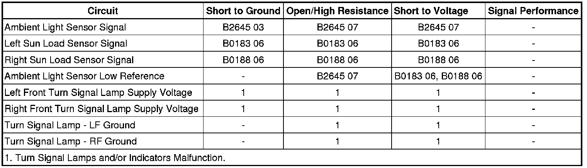

B2645
DTC B2645
Diagnostic Instructions
* Perform the Diagnostic System Check - Vehicle (Initial Inspection and Diagnostic Overview) prior to using this diagnostic procedure.
* Review Strategy Based Diagnosis (Initial Inspection and Diagnostic Overview) for an overview of the diagnostic approach.
* Diagnostic Procedure Instructions (Initial Inspection and Diagnostic Overview) provides an overview of each diagnostic category.
DTC Descriptors
DTC B2645 03
- Ambient Light Sensor Circuit Voltage Below Threshold
DTC B2645 07
- Ambient Light Sensor Circuit Voltage Above Threshold
Diagnostic Fault Information

Circuit/System Description
The ambient light sensor is used to monitor outside lighting conditions. The ambient light sensor provides a voltage signal that will vary between 0.2 and 4.9 volts depending on outside lighting conditions. The HVAC control module provides a low reference ground and 5-volt reference signals to the ambient light sensor. The body control module (BCM) monitors the ambient light sensor signal circuit to determine if outside lighting conditions are correct for either daytime running lights (DRL) or automatic lamp control (ALC) when the headlamp switch is in the AUTO position. In daylight conditions the BCM will command the DRLs ON. During low light conditions the BCM will command the low beam headlamps ON. Any function or condition that turns on the headlamps will cancel DRL operation. With the turn signal/multifunction switch in the OFF position, the DRLs which consists of the front turn signal lamps will either be turned ON or OFF after a 30 second delay, depending on whether daylight or low light conditions are sensed by the ambient light sensor.
Conditions for Running the DTC
Battery voltage must be between 9-16 volts.
Conditions for Setting the DTC
B2645 03
The DTC will set when the BCM detects a short to ground in the ambient light sensor signal circuit.
B2645 07
The DTC will set when the BCM detects a short to voltage or an open/high resistance in the ambient light sensor signal circuit.
Actions Taken When the DTC Sets
* Automatic lamp control (ALC) is inoperative.
* The BCM defaults to low light status and commands the low beam headlamps ON.
Conditions for Clearing the DTC
* The condition responsible for setting the DTC no longer exists.
* You issue a scan tool CLEAR DTCs command.
* A history DTC will clear once 100 consecutive malfunction-free ignition cycles have occurred.
Reference Information
Schematic Reference
Headlights/Daytime Running Lights (DRL) Schematics (Headlights/Daytime Running Lights (DRL) Schematics)
Connector End View Reference
Component Connector End Views (Connector Views)
Description and Operation
Exterior Lighting Systems Description and Operation (Exterior Lighting Systems Description and Operation)
Electrical Information Reference
* Circuit Testing (Component Tests and General Diagnostics)
* Connector Repairs (Component Tests and General Diagnostics)
* Testing for Intermittent Conditions and Poor Connections (Component Tests and General Diagnostics)
* Wiring Repairs (Component Tests and General Diagnostics)
Scan Tool Reference
Control Module References (Programming and Relearning) for Scan Tool Information
Circuit/System Testing
1. Ignition OFF, disconnect the harness connector at the sunload sensor assembly.
2. Ignition OFF, scan tool OFF, doors CLOSED, test for less than 20.0 ohms of resistance between the low reference circuit terminal C and ground.
• If greater than the specified range, test the low reference circuit for an open/high resistance. If the circuit tests normal, replace the HVAC control module.
3. Reconnect the sunload sensor assembly harness connector.
4. Ignition ON, verify the scan tool ambient light sensor parameter is greater than 0.2 volts.
• If less than the specified range, test the signal circuit terminal D for a short to ground. If the circuit tests normal, replace the BCM.
5. Verify the scan tool ambient light sensor parameter is less than 4.9 volts.
• If greater than the specified range, test the signal circuit for a short to voltage or an open/high resistance. If the circuit tests normal, replace the BCM.
6. If all circuits test normal, replace the sunload sensor assembly.
Repair Instructions
Perform the Diagnostic Repair Verification (Verification Tests) after completing the diagnostic procedure.
* Ambient Light Sensor Replacement (Service and Repair)
* Control Module References (Programming and Relearning) for BCM or HVAC control module replacement, setup, and programming